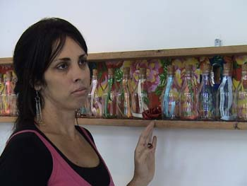

17º Encontro de Artes Plásticas apresenta
a mostra “Memórias” de Rita Moura
O 17º Encontro de Artes Plásticas de Atibaia abre a mostra paralela Memórias da artista Rita Moura no dia 26 de julho, às 16 horas, no Espaço Olho Latino do Museu João Batista Conti. A mostra é composta por pinturas, poesias e objetos.
|  |
Rita Moura |
O curador Paulo Cheida Sans optou em realizar a mostra especial da artista por ela ter sido premiada no 15º e 16º Encontro de Artes. Cheida diz que “Rita Moura é hoje, sem dúvida, uma das principais artistas da cidade e que merece destaque pelo conjunto de seu trabalho”. A artista expôs recentemente no Museu Afro Brasil, no Ibirapuera em São Paulo, a convite do curador Emanuel Araújo.
Rita faz da fé a sua inspiração. Cria obras com adereços, poesias e objetos inspirados na beleza da religião. Os agradecimentos divinos e as promessas cumpridas pelos brasileiros são eternizados em suas obras.
Paulo Cheida observa que, hoje em dia, em meio a tanta influência que os curadores e os artistas sofrem do mundo globalizado, nem sempre se pode observar num evento de porte, como está sendo o Encontro de Artes, a representatividade de uma arte puramente nacional. Paulo afirma que a participação de Rita Moura traz esse equilíbrio ao evento por ela recriar artisticamente a alma do brasileiro.
O Espaço Olho Latino ocupa uma das salas do Museu João Batista Conti, localizado na Praça Bento Paes, s/n, Centro, na Estância de Atibaia, SP. A mostra estará aberta à visitação de 26 de junho a 31 de agosto, de terça a sexta-feira, das 11h30 às 17h30, e aos sábados, domingos e feriados das 9h às 17h30.
O 17º Encontro de Artes também está com exposições no Centro de Convenções “Victor Brecheret” e no Museu Olho Latino. É um projeto realizado pela Prefeitura de Atibaia e pelo Museu Olho Latino com o apoio do Programa de Ação Cultural da Secretaria de Estado da Cultura de São Paulo.
Confira as fotos da exposição.
Informativo:
Exposição: "Memórias" – pinturas, poesias e instalações da artista Rita Moura.
Mostra Especial do 17º Encontro de Artes Plásticas de Atibaia.
Curadoria: Paulo Cheida Sans.
Período da mostra: de 26 de julho a 31 de agosto de 2008.
Visitação: de terça a sexta-feira, das 11h30 às 17h30, e aos sábados, domingos e feriados das 9h às 17h30.
Local: Espaço Olho Latino no Museu João Batista Conti.
Endereço: Praça Bento Paes, s/n, Centro, Estância de Atibaia, SP.
Telefone para contato: (0xx11) 4412-7153.
Realização: Museu Olho Latino e Prefeitura Municipal da Estância de Atibaia com o apoio do Programa de Ação Cultural da Secretaria de Estado da Cultura de São Paulo.